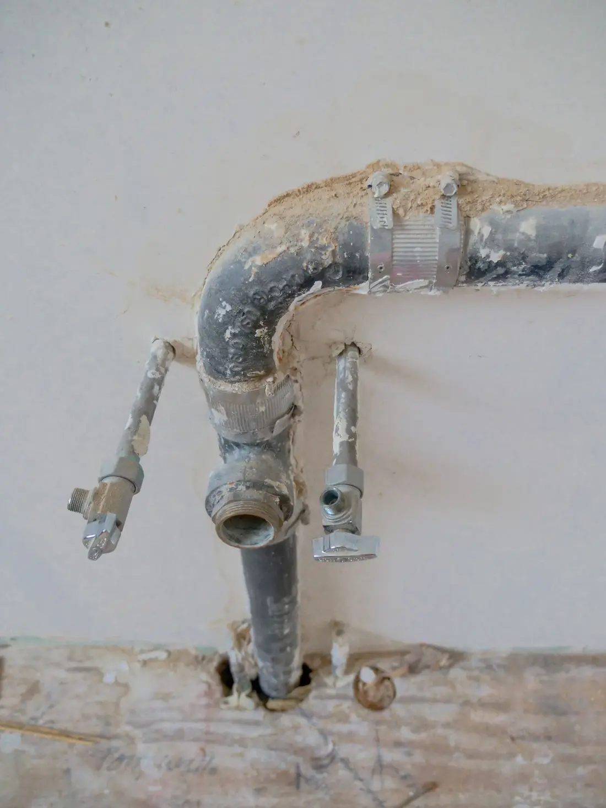
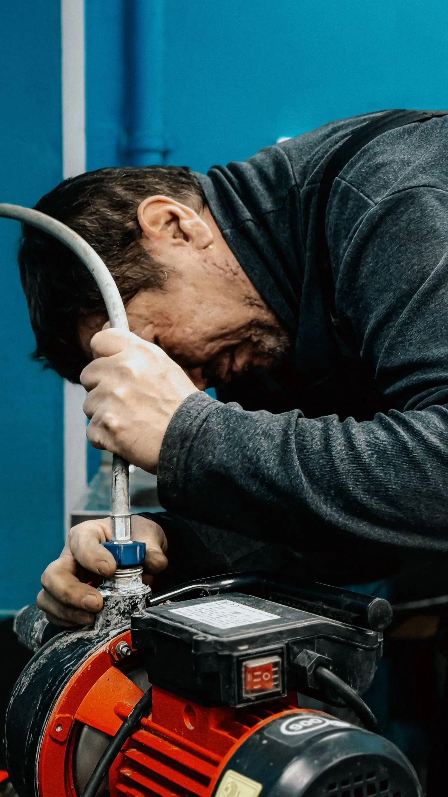
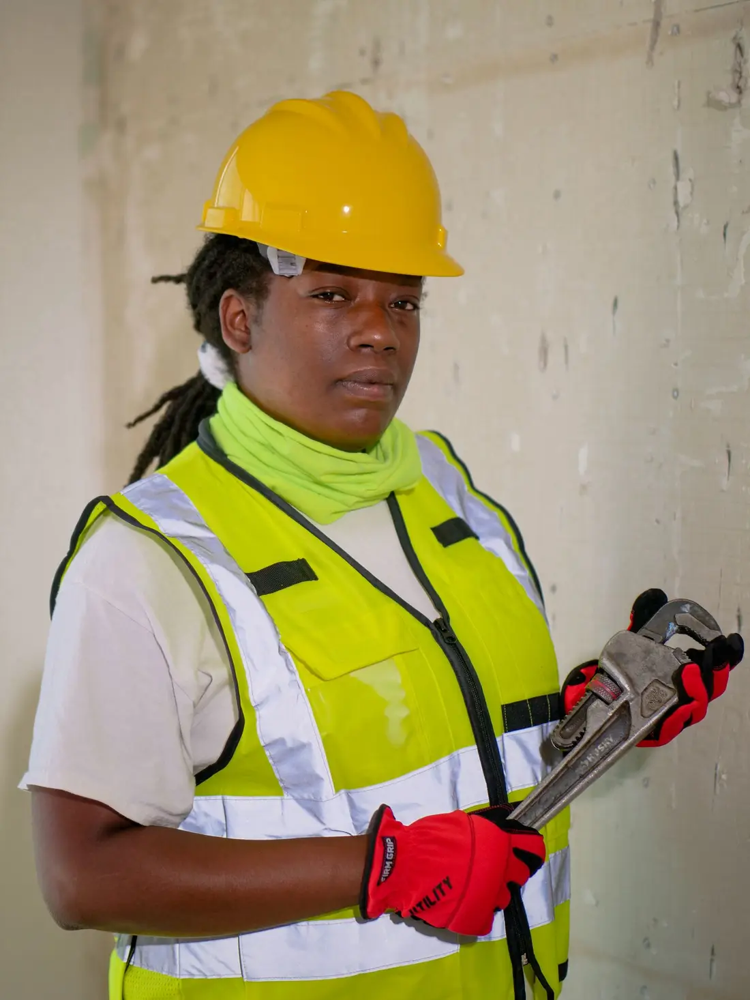

Texarkana, AR & TX · Licensed and bonded · Since 2009
Plumbing is what we do best
Fast, reliable and quality plumbing repairs and installations for families and businesses in Texarkana, AR and TX. Our licensed Master Plumber does everything to ensure your satisfaction.
Plumbing services
As a full-service residential and commercial plumbing company, we can also provide plumbing services and installations for new construction projects.

Plumbing services
Water heater repair, installations and upgrades, frozen pipes, clogged drains and more.
Learn more →Sewer and drains
Sewage backup, sewer line replacement, clogged drains and camera inspection.
Learn more →
Leaks and frozen pipes
Water and sewer leaks, frozen pipes and installations and upgrades, day or night.
Learn more →
New construction
Plumbing services and installations for new construction projects.
Learn more →Your plumbers
Through hard work, dedication and passion we strive to solve plumbing problems in Texarkana, AR and TX. Our goal is to lessen the downtime you have as a homeowner or business owner because of plumbing issues.
- AR and TX licensed Master Plumber
- Quick response to service calls
- Tools, parts and supplies on the truck to complete the job efficiently
- Residential, commercial and new construction
What customers say
These men worked tirelessly to finding my leak. They were here until they were going to get it done. They were on time, let me know when they came and left. I will not use another plumber, they were incredible. If you are looking for a good plumber this is a company for you.
Licensed in AR and TX
AR Master Plumber MP6062
TX Responsible Master Plumber M-40959
AR Contractors License 0322190316
Where we work
Texarkana, AR and Texarkana, TX. For new construction projects we work in a 100 mile radius. For service calls we work in a 30–40 mile radius.
Visit
Texarkana, Arkansas 71854
United States
- Mon–Fri
- 8:00 am – 5:00 pm
- Sat–Sun
- Closed
24/7 emergency service available.
Call (870) 774-7400